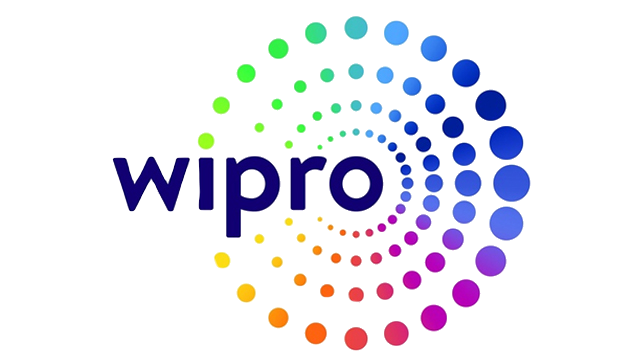
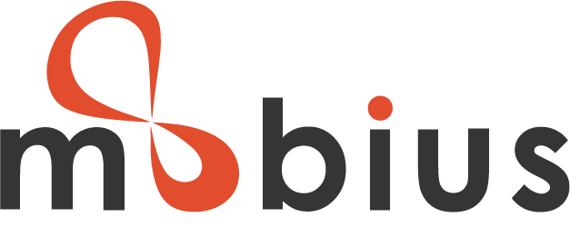
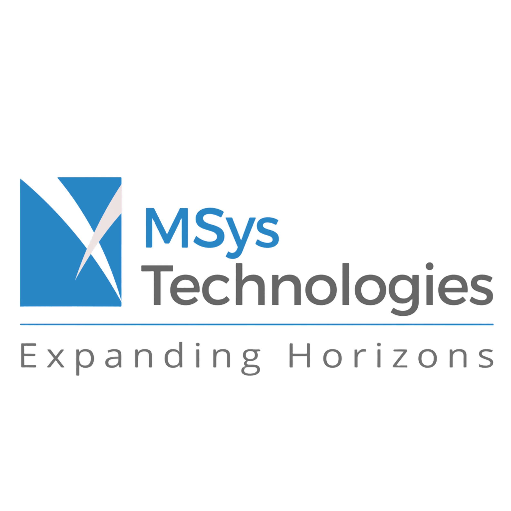
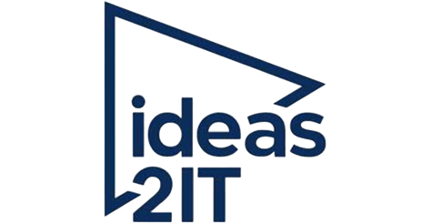
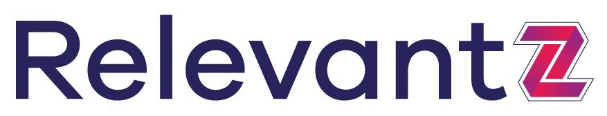

Wipro Technologies
Role: Python Automation Engineer

Client: SIEMENS
Jun 2014 - Oct 2016
Client was a South African Bank (Standard Bank of South Africa (SBSA). We built a tool called Support Automation & the objective of this project was to automate the support teams' day-to-day process like Daily Health check, Incident allocation, Transaction Fix Analysis & other transaction-related work.
- Automated the POS Transaction process.
- Automated the account origination process.
- Automated the Version check between ATM Servers.
- Automated the fetching Error log from Mainframe transaction file.
- Contributed in automation process of the SSC Self Service Channel & Cards Transaction.
- Automated the Account details Extraction.
- Deploying latest builds between Banking Servers.
Tech Stack: Python, Django, REXX, DB2, HTML, SQL, JCL, ATM Servers.
Mobius Knowledge
Role: Senior Software Engineer

Client: Mobito & Frigginyeah
Nov 2016 - Jul 2017
Client was a US-based Data Analyst who initiated the Mobito & Frigginyeah project. The primary goal of the project was to crawl data from websites for analysis and product enhancement.
- Scraping the Entire product information from client-recommended websites.
- Possessed Experience in Crawling Techniques using Python Scrapy Framework, Python Selenium, XPATH & Regular Expression.
- Automated Spider Scripts for E-commerce websites like Walmart, Kmart, Target.com etc.
- Contributed to building the Job Execution Service & Integrated third-party Captcha API services.
Tech Stack: Scrapy & Selenium with Python, Xpath, Regex, MySQL.
MSys Technologies
Role: Senior Software Engineer

Client: NimbleStorage, HPE
Aug 2017 - Oct 2020
The client, Nimble Storage from San Jose-US, providing cloud storage solutions & data centers. The objective of my team was giving provision to run Nimble OS Test scripts & share the results for analysis.
- Automated test-script level execution to make ease test runs for QA Teams.
- Developed API with Flask Swagger for Data Center Assets like Arrays, Hosts.
- Developed CLI tool for Apollo which does API calls from CLI using Python Click.
- Implemented feature for restrict unwanted resource usage & resource matching functionality for Nimble OS test cases.
- Generated dashboards & reports using Tableau Visualization Tool for QA Teams.
- Parallelly involved in enhancement-related development & bug fixing in Zeus Application.
Tech Stack: Python, Django, Flask, Kafka, Jenkins, Docker, MySQL, MongoDB.
Ideas2IT Technologies
Role: Technical Analyst

Client: SIEMENS
Dec 2020 - Feb 2022
Siemens, a US-based manufacturer of electrical switches and transformers. The main objective of my team was to build a price prediction algorithm to determine whether negotiating prices with wholesale distributors and dealers is feasible or not.
- Creating Flask API Endpoints for Pricing Algorithm.
- Providing Solutions for Framework development queries.
- Designing the Database schema for Pricing Prediction Frameworks.
- Responsible for Pricing Prediction Framework Deployments.
Tech Stack: Python, Flask, MySQL, Swagger, AWS (Lambda, ECR, ECS), Docker.
Relevantz Technology
Role: Lead Python Engineer

Client: BNY Mellon
Oct 2022 - May 2024
BNY Mellon, an American banking and financial services. The main objective of my team was handling Python services for Extract, Transform & Load (ETL framework) between Oracle and Snowflake data sources.
- Deciphering the Data Modeling complex legacy framework written in RDFLIB.
- Regularly debugging and resolving issues within the framework.
- Contributing to micro-feature development for diverse clients.
- Mentoring and guidance to the development team from the vendor side.
Tech Stack: Python, Flask, Oracle, Snowflake, Redis.